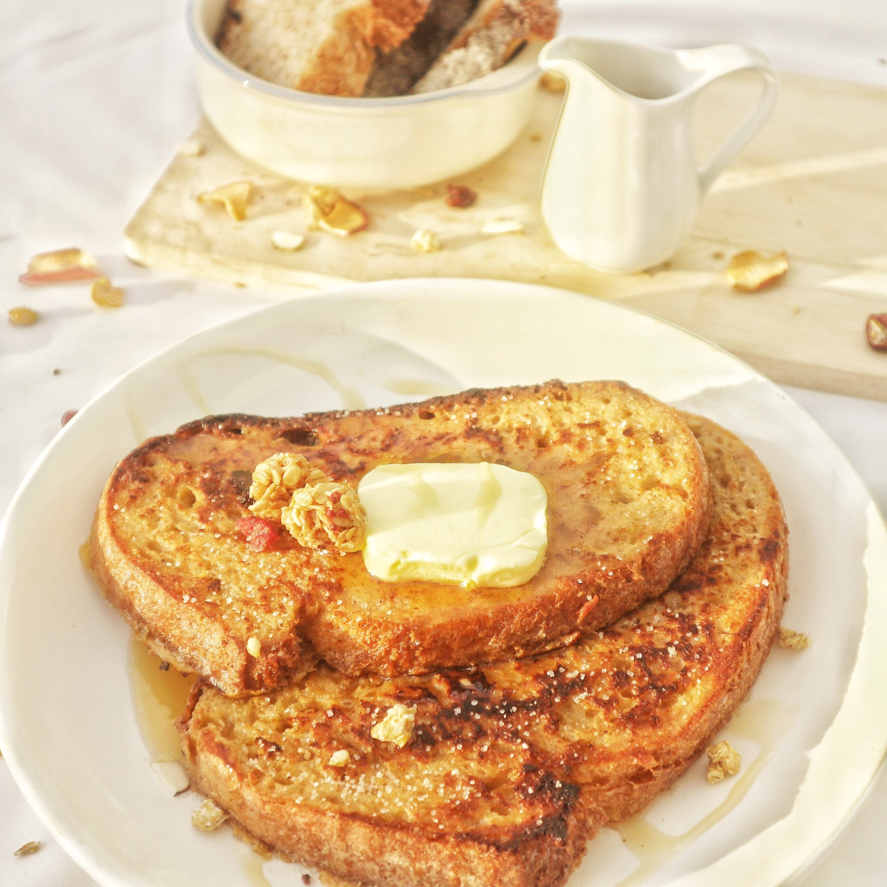

French Toast

Description
You have a sweet-tooth? Your favorite meal of the day is breakfast? You find pancakes boring?
Then French Toast may be your best breakfast option anytime! In fact, it's one of mines too.
Ingredients
To make this you're gonna need:
- Sourdough bread - 2 slices
- Butter - 50 grams
- Egg - 1 or 2 egg
- Milk - 500ml
- Vanilla extract - to your taste (too much can be overpowering)
- Cinnamon powder - 2 tsp (or more)
- Any kind of Syrup or honey
- Any kind of toppings you want
Cooking Steps
- Add together your egg, vanilla, and cinnamon powder to your milk to make the custard mixture
- Whisk thoroughly to combine the ingredients
- Soak both sides of your bread slices into the mixture
- (Optional) Let them sit for a while
- Heat up your non-stick pan
- Add some butter to the pan and let it melt
- Grill your soaked slices on both sides until brown and cruncy
- Serve on plate, garnish with nuts and drizzle some honey/syrup
- Enjoy!